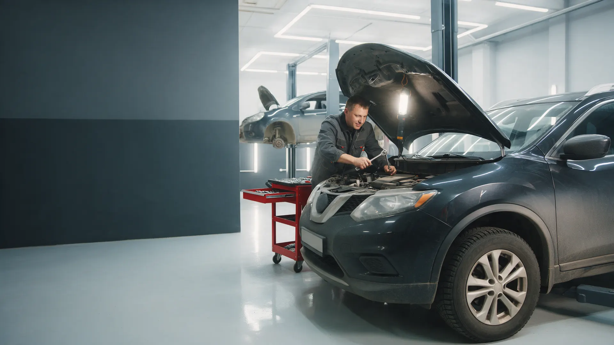
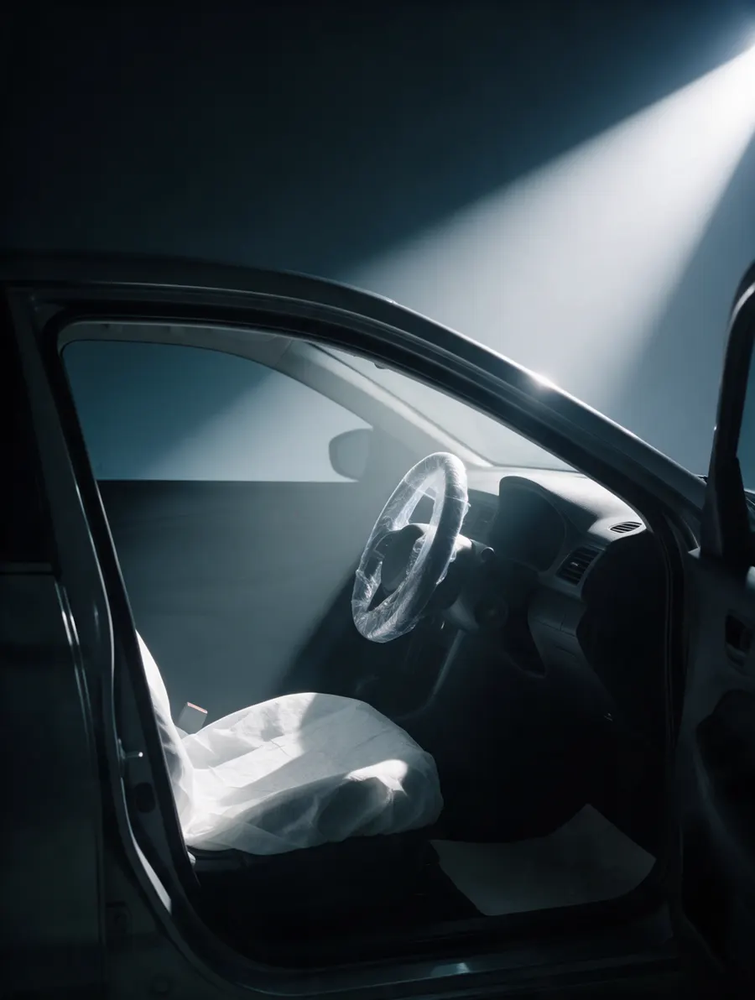
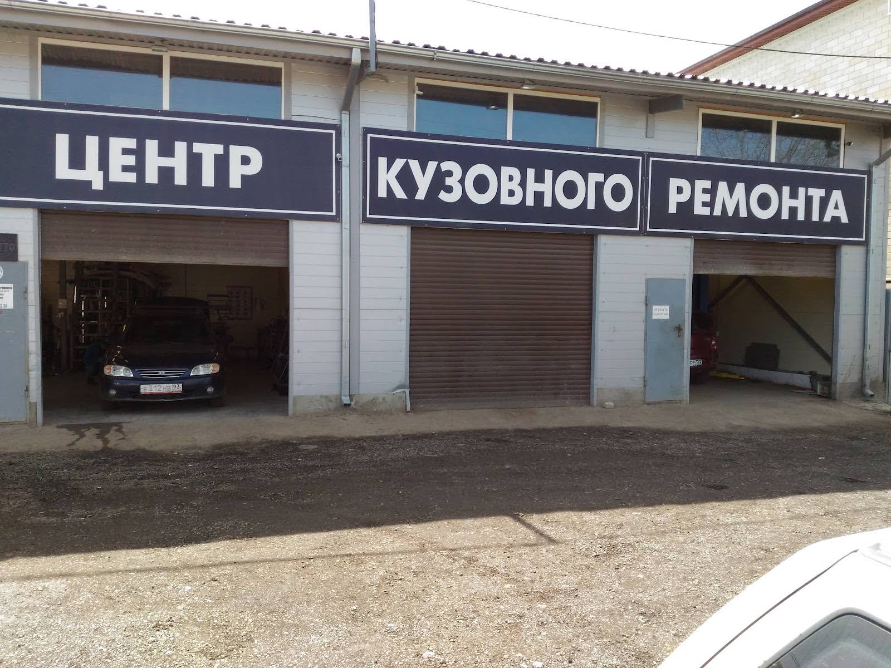

Автосервис · Краснодар
Автосервис в Краснодаре: смета до ремонта
Диагностика, ТО, ремонт двигателя и подвески. Перед работой присылаем смету в мессенджер.

- Цена типовых работ – до приезда
- Без вашего «да» ничего не делаем
- Выдача с фото узлов до и после
Цены на типовые работы – до приезда
Ориентиры на работу без стоимости запчастей и материалов. Точную сумму называем при записи по марке и году, на месте она не меняется.
Сервис
- Компьютерная диагностикаошибки по OBD, отчёт1 500 ₽
- ТО: масло и фильтрыосмотр по регламентуот 2 000 ₽
- Тормозные колодкиза ось, с проверкой дисковот 1 500 ₽
- Диски и колодкиза ось, с прокачкойот 3 500 ₽
- Диагностика подвескина подъёмнике, с актом1 000 ₽
Детейлинг
- Химчистка салонасиденья, потолок, пластик, коврыот 12 000 ₽
- Полировка кузовав один или два этапаот 15 000 ₽
- Керамическое покрытиепосле полировкиот 25 000 ₽
- Полировка фарпара, с защитным слоемот 3 000 ₽
Цены ориентировочные, средние по нише. В боевом сайте поставим ваши и уберём эту пометку.
Четыре шага, и на каждом – ваше «да»
- 01
Записались на время
Пишете марку, год и что беспокоит. Приехали – машина сразу в бокс.
- 02
Показываем узел и акт
Что срочно, что подождёт, сколько стоит. Запчасть выбираете вы.
- 03
Делаем ровно то, что в акте
И в оговорённый срок. Всплыло что-то – звоним и спрашиваем.
- 04
Выдача с фото
Фото узлов до и после, старые детали – вам, салон – чистый.


Что не делаем без согласования
Не меняем то, чего нет в акте
Нашли что-то ещё – звоним, показываем, ждём вашего «да».
Не ставим запчасти без вашего выбора
Оригинал или аналог – решаете вы, цену знаете до установки.
Не держим машину дольше срока молча
Срок сдвинулся – звоним сразу и объясняем, почему.
Не выписываем «рекомендуем» в чек
Что подождёт, остаётся в списке «на потом», а не в сумме.
Отзывы с Google Карт
«Делали развал схожднение всё хорошо»
Юрий Елисеев · 3 года назад
«Мастер Игорь делает качествеено и на совесть. Работой доволен»
Не Смотри · 5 лет назад
«Все круто и быстро»
Sinner_NSK · 5 лет назад
Отзывы с карточки на Google Картах, без правок.
Контакты
- Адрес
- ул. Комарова, 1, Краснодар
- Часы
- ежедневно 09:00-23:00
- Телефон
- 8 (938) 502-30-65